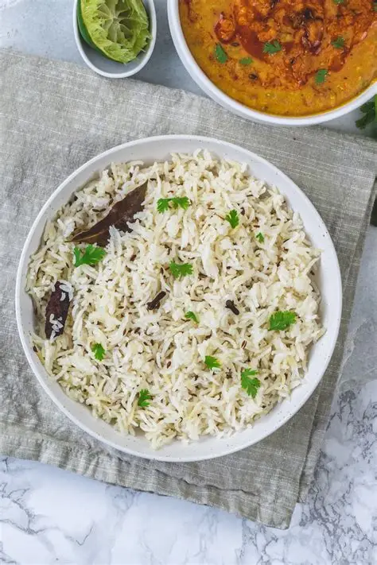

Jeera Rice
⭐⭐⭐⭐⭐ 4.8 Rating | ⏱ 20 Minutes | 🍽 4 Servings
Category
Lunch / Dinner
Difficulty
Easy
Calories
340 kcal
Cooking Style
Stir-Fried
📋 Ingredients
- Basmati Rice 1 cup (long-grain, rinsed until water runs clear)
- Water 2 cups
- Clarified Butter (Ghee) or Oil 2 tablespoons
- Cumin Seeds (Jeera) 1.5 teaspoons
- 1 bay leaf (tej patta)
- 1-inch cinnamon stick
- 2 green cardamoms
- 3 cloves
- Green Chili 1 (slit, optional)
- Salt 1 teaspoon (or to taste)
- Garnish 2 tablespoons finely chopped fresh coriander leaves
🍳 Required Utensils
- Fine-mesh strainer (for washing rice)
- Heavy-bottom pot or deep pan with a tight-fitting lid
- Spatula or fork (for fluffing)
📖 Introduction
Jeera Rice (Cumin Rice) is a popular, fragrant Indian dish made by cooking long-grain Basmati rice infused with cumin seeds blooming in pure ghee and aromatic whole spices.
🔬 Principle
Jeera Rice relies on lipid fat extraction and starch separation. Cumin seeds contain essential oils (cuminaldehyde) that release maximum flavor when bloomed in hot ghee. Soaking and rinsing the rice removes surface starches, ensuring each grain cooks up distinct and non-sticky.
👨🍳 Procedure
- Wash 1 cup of Basmati rice under cold water 3–4 times until the water runs clear.
- Soak in water for 20–30 minutes, then drain completely.
- Heat 2 tbsp ghee or oil in a heavy pot over medium heat.
- Add bay leaf, cinnamon, cardamoms, cloves, and cumin seeds.
- Allow cumin seeds to crackle and turn golden-brown (about 30 seconds).
- Add the drained Basmati rice and slit green chili to the pot.
- Gently sauté for 1–2 minutes to coat the grains in hot ghee without breaking them.
- Pour in 2 cups of water and salt.
- Bring to a rolling boil, then reduce heat to the lowest setting.
- Cover tightly with a lid and cook undisturbed for 10–12 minutes until all water is absorbed.
- Turn off the heat and let the pot sit covered for 5–10 minutes.
- Remove the lid, sprinkle chopped coriander on top, and gently fluff the rice with a fork
⚠ Precautions
- Burnt cumin seeds taste acrid and ruin the entire batch; keep heat on medium when tempering.
- Portions should be moderated by individuals monitoring blood sugar due to its carbohydrate density.
💡 Chef Tips
- Stirring wet rice releases excess starch, making the dish sticky instead of fluffy.
- Always fluff hot cooked rice with a fork or flat spatula around the edges; a spoon will crush delicate long-grain Basmati.
- Using fresh pure cow ghee yields the signature restaurant-style flavor profile.
🥗 Nutrition Facts
| Nutrient | Amount |
|---|---|
| Calories | 260 kcal |
| Protein | 4.5 g |
| Carbohydrates | 42 g |
| Fat | 7-8 g |
| Fiber | 1.2 g |
🍽 Serving Suggestions
- Excellent pairing with Dal Tadka, Dal Makhani, Paneer Butter Masala, or Chana Masala.
- Serve alongside cucumber or boondi raita and crisp papadums.
🌿 Health Benefits
- Aids Digestion Cumin seeds stimulate digestive enzymes and reduce bloating.
- Clean Energy Long-grain Basmati provides stable, complex carbohydrates for sustained vitality.
✅ Result
Fragrant, slender, and elongated rice grains that separate easily, boasting a buttery sheen and golden cumin specks sprinkled throughout.
🎥 Watch Recipe Video
Learn the complete recipe by watching the step-by-step video.
▶ Watch on YouTube